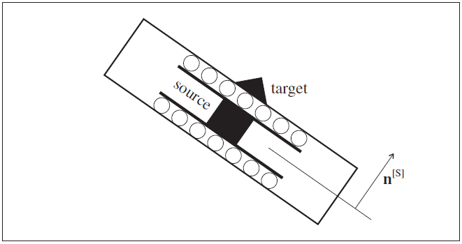
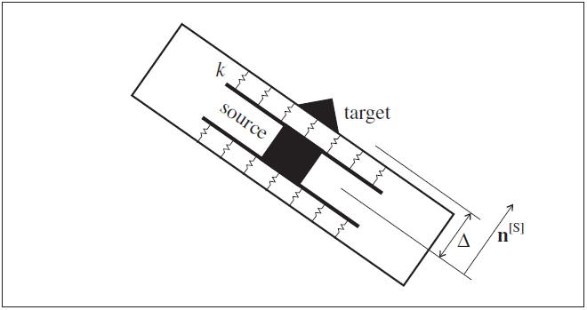
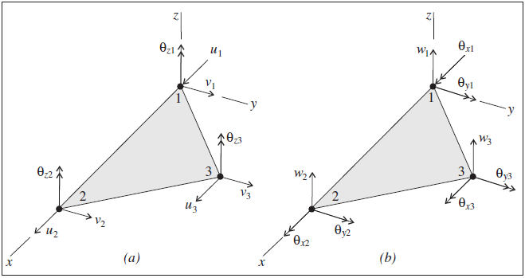

结构单元逻辑的一般表述
此处给出结构单元逻辑的底层实现细节。只有希望深入理解该实现（例如为实现结构单元与网格之间的非标准相互作用）的用户才需阅读。结构单元逻辑以通用而灵活的方式开发，以支持各种（目前尚未预见的）应用情形。
结构单元连接
结构单元之间仅通过节点相互作用；而节点又仅通过连接与网格相互作用。因此结构单元连接是结构单元与网格相互作用的唯一途径。每个连接把节点连到目标实体。每个节点只能有一个与之关联的连接。连接有两类：(1) node-to-zone，把节点连到网格单元（而非仅连到网格点）；(2) node-to-node，把节点连到其他节点。
除把结构单元与网格之间的相互作用局部化外，连接还提供一种以节点局部坐标系表述、在节点处实现非线性本构行为的通用机制。连接支持以下三种附着条件，它们对其源节点的每个局部方向独立指定：
- free 源节点在该局部方向上的速度与目标实体的速度无关。
- rigid 源节点在该局部方向上的速度从属于目标实体在该方向上的速度分量，二者保持相等（见 图 1（Figure 1））。
- deformable 以 \({\bf n}^{[{\rm S}]}\) 表示附着方向。源节点与目标实体通过沿 \({\bf n}^{[{\rm S}]}\) 方向定向的弹簧相连。弹簧刚度为与该连接关联的平均单位面积刚度（见 图 2（Figure 2））。


图 1：刚性附着条件的物理类比


图 2：可变形附着条件的物理类比
可变形附着条件允许把广义本构模型纳入模型，这些模型关联某一局部方向上位移增量与总力。共有五个此类模型用于实现锚索、桩、土工格栅与衬砌的网格相互作用（见 表 1（Table 1））。只有线性弹簧与法向屈服弹簧可供一般使用（见 structure link attach 命令）。法向屈服弹簧可用于在梁单元或桩单元之间引入塑性铰（见 梁结构中塑性铰的形成（Plastic Hinge Formation in a Beam Structure）），以及在壳类单元之间沿边缘引入塑性铰线（见 壳结构中塑性铰的形成（Plastic Hinge Formation in a Shell Structure））。法向屈服弹簧在拉伸与压缩下都提供弹性理想塑性行为，并能跟踪各方向屈服期间可能形成的间隙。
| DOF | beam | cable | pile | shell | geogrid | 衬砌 |
|---|---|---|---|---|---|---|
| 1 | rigid | SY | SY | rigid | PY | PY |
| 2 | rigid | rigid | PY | rigid | PYDP | PYDP |
| 3 | rigid | rigid | PYDP | rigid | rigid | NY |
| 4 | free | free | free | free | free | free |
| 5 | free | free | free | free | free | free |
| 6 | free | free | free | free | free | free |
表 1（Table 1） 中各符号定义如下。“Rigid”表示与单元所嵌入的网格单元刚性连接；“free”表示该自由度方向无连接。SY 表示剪切屈服弹簧。PY 与 PYDP 表示桩屈服与桩屈服相关弹簧，二者共同作用产生在由这两个方向所定义平面内的单个非线性弹簧行为。NY 表示法向屈服弹簧。此处不描述非线性弹簧行为；使用这些弹簧的各单元类型的整体单元-网格相互作用行为在其各自小节中描述。
可在两节点之间引入塑性铰：在这两个节点之间创建节点-节点连接，调整目标节点的节点局部系，使法向屈服弹簧可插入到铰所绕轴的方向上，同时保持其他所有方向自由（见 梁结构中塑性铰的形成（Plastic Hinge Formation in a Beam Structure） 与 壳结构中塑性铰的形成（Plastic Hinge Formation in a Shell Structure））。法向屈服弹簧的性质应按如下设置：
- 把面积设为一，并把单位面积刚度设为使用该节点的结构构件刚度约十倍。
- 把抗压与抗拉屈服强度设为塑性弯矩承载力（对梁与桩），或单位长度塑性弯矩承载力（对壳类单元）。
节点局部系的方位在一组循环开始时（或执行 执行计算时步（model cycle） 0 命令时）依据使用该节点的单元类型自动设定（见 结构单元节点（Structural Element Nodes））。使用单元创建命令（structure shell create 等）时，若构成新建单元的某些节点位于网格单元内，则会创建节点-网格单元连接，并赋予 图 1（Figure 1） 所示的默认附着条件：
单元-网格相互作用通过节点-网格单元连接发生。这些连接存储网格单元以及网格单元内的一个插值位置，以便在节点与网格单元之间传递力与速度。默认情况下即便在大应变模式下运行，这些插值位置也不改变。把连接的大应变滑动标志设为 开启（on） 可允许插值位置随网格迁移。通常对锚索、桩、土工格栅与衬砌把该标志设为 开启（on），此时这些单元所用所有连接的该标志会自动设为 开启（on）。迁移过程使用大应变滑动容差（见 结构链接（structure link） 命令可用的 tolerance 选项）。
有限单元刚度矩阵
各结构单元的结构响应由其通过节点为周围体系提供的刚度描述。每个结构单元都有用有限元技术形成的刚度矩阵。刚度矩阵 \([\bf k]\) 通过关系 \(\{ {\bf F} \} = [{\bf k}] \{ {\bf d} \}\) 把广义节点位移（平动与转动）\(\{\bf d \}\) 与广义节点力（力与力矩）\(\{\bf F \}\) 联系起来，其中 \([\bf k]\) 为方阵、对称，其阶数等于该有限单元的自由度数。
已实现六种有限元刚度矩阵：一个两节点梁有限单元与五种三节点壳有限单元。这些刚度矩阵表述在下面两个小节中描述。梁单元与桩单元采用梁有限单元；锚索单元采用梁有限单元的退化形式，即只使用局部轴向自由度；而壳单元、土工格栅单元与衬砌单元采用不同的壳有限单元。注意单元与网格之间的相互作用通过连接实现，连接把单元所用节点与网格单元相连。
梁有限单元
程序中的梁有限单元是两节点直线有限单元，每节点六个自由度：三个平动分量与三个转动分量（见 梁符号约定（Beam Sign Convention））。梁有限单元刚度矩阵表述由 McGuire 与 Gallagher（1979，第 81-91 页）以显式形式给出。该单元模拟直线、等截面且关于两个横截面主轴均对称（双对称）、由各向同性材料构成的梁的结构行为。表述考虑均匀轴向变形、弯曲变形与扭转变形引起的位移，忽略横向剪切变形引起的位移，以及扭转力可能引起的横截面平面外（纵向）翘曲引起的位移。按 McGuire 与 Gallagher 的说法，所得刚度矩阵所体现的方程足以分析结构工程实践中遇到的大多数框架。
壳有限单元
壳类单元可用的三节点三角形有限单元共五种：2 个平面应力单元、1 个板弯曲单元与 2 个壳单元。平面应力单元只模拟膜作用，板弯曲单元只模拟弯曲作用，壳单元则把一般壳行为模拟为膜作用与弯曲作用的叠加（见 弯曲作用（Bending Action） 与 膜作用（Membrance Action））。这些单元作用于壳类单元可用的 18 个自由度（见 壳类坐标系（Shell-Type Coordinate System））。
CST 平面应力单元（6 自由度）
CST 平面应力单元是三节点平面应力有限单元，每节点两个平动自由度（去除转动自由度后示于 图 3（Figure 3） (a)）。CST 杂交单元的描述及 \([{\bf k}_{\rm CST}]\) 的显式表述由 Cook 等（1989）给出。
CST 杂交平面应力单元（9 自由度）
CST 杂交平面应力单元是三节点平面应力有限单元，每节点三个自由度：两个平动分量与一个转动分量（示于 图 3（Figure 3） (a)）。CST 杂交平面应力单元采用假定应力杂交方法建立。通过在自由度中引入“钻孔自由度” \(\theta_z\)，它比常应变三角形（CST）提供更强的膜响应。CST 杂交单元的描述及 \([{\bf k}_{\rm CSTH}]\) 的显式表述由 Cook（1987）给出。
DKT 板弯曲单元（9 自由度）
DKT 板弯曲单元是三节点板有限单元，每节点三个自由度：一个平动分量与两个转动分量（示于 图 3（Figure 3） (b)）。DKT 板弯曲单元在单元内六个离散位置（角点与边中点）上强制满足 Kirchhoff 板理论假定，故称 DKT（离散 Kirchhoff 三角形）。该单元由 Batoz 等（1980）描述，他们总结认为该单元是发表时最有效、最可靠的三节点（9 自由度）板弯曲单元之一。\([{\bf k}_{\rm DKT}]\) 的显式表述由 Batoz（1982）给出。
DKT-CST 杂交壳单元（18 自由度）
DKT-CST 杂交壳单元是三节点平面薄壳有限单元，每节点六个自由度：三个平动分量与三个转动分量。它把模拟壳中膜作用的九自由度 CST 杂交平面单元与模拟壳中弯曲作用的九自由度 DKT 板单元相结合。这种组合平面壳单元称为 DKT-CST 杂交单元，由 Cook 等（1989，第 351-352 页）描述。
设某典型单元位于局部坐标系 \(xyz\) 的 \(xy\) 平面内。节点自由度示于 图 3（Figure 3），其中 \(\lfloor \theta_x \quad \theta_y \rfloor = \lfloor {\partial w \over \partial y} \quad -{\partial w \over \partial x} \rfloor\)。把这些自由度记为 \(\{{\bf d'} \}\)，并按以下顺序排列
其中 \(\lfloor {\bf u}_i \rfloor = \lfloor u_1\quad u_2 \quad u_3 \rfloor\)、\(\lfloor {\bf\theta}_{xi} \rfloor = \lfloor \theta_{x1}\quad \theta_{x2} \quad \theta_{x3} \rfloor\) 等。对 DKT-CST 杂交壳单元，其局部 \(xyz\) 坐标中的刚度矩阵记为 \([{\bf k'}]\)，则有
其中 \([{\bf k}_{\rm CSTH}]\) 为 CST 杂交平面应力单元的刚度矩阵，\([{\bf k}_{\rm DKT}]\) 为 DKT 板弯曲单元的刚度矩阵。
关于 DKT-CST 杂交单元有以下几点观察（另见下一节关于 DKT-CST 单元的观察）。
- \([{\bf k}_{\rm CSTH}]\) 只含与膜作用相关的自由度，\([{\bf k}_{\rm DKT}]\) 只含与弯曲作用相关的自由度。虽然实际曲面壳中处处存在膜-弯曲耦合，但单个单元中并不存在（由 (1) 的 9 × 9 零矩阵可见）。不过如 Carpenter 等（1986）所示，该单元性能足以与曲面单元相竞争。
- 该单元给出的解收敛于经典 Kirchhoff 薄板解。因此该单元适用于模拟横向剪切变形引起的位移可忽略的薄壳。


图 3：局部 xy 平面中的 DKT-CST 杂交平面壳有限单元：(a) 与膜作用相关的自由度（CST 杂交子单元）；(b) 与弯曲作用相关的自由度（DKT 子单元）
DKT-CST 壳单元（15 自由度）
DKT-CST 壳单元是三节点平面薄壳有限单元，每节点五个自由度：三个平动分量与两个转动分量。它把模拟壳中膜作用的六自由度 CST 平面单元与模拟壳中弯曲作用的九自由度 DKT 板单元相结合。这种组合平面壳单元称为 DKT-CST，由 Cook 等（1989，第 351-352 页）描述。
设某典型单元位于局部坐标系 \(xyz\) 的 \(xy\) 平面内。去除 \(\theta_z\)（其中 \(\lfloor \theta_x \quad \theta_y \rfloor = \lfloor {\partial w \over \partial y} \quad -{\partial w \over \partial x} \rfloor\)）后，节点自由度示于 图 3（Figure 3）。把这些自由度记为 \(\{{\bf d^\star} \}\)，并按以下顺序排列
其中 $lfloor {bf u}_i rfloor = lfloor u_1quad u_2 quad u_3 rfloor$，$lfloor {ubmtheta}_{xi} rfloor = lfloor theta_{x1}quad theta_{x2} quad theta_{x3} rfloor$，依此类推。对 DKT-CST 壳单元，其局部 $xyz$ 坐标中的刚度矩阵记为 $[{bf k^star}]$，则
其中 \([{\bf k}_{\rm CST}]\) 为 CST 平面应力单元的刚度矩阵，\([{\bf k}_{\rm DKT}]\) 为 DKT 板弯曲单元的刚度矩阵。
以下关于 DKT-CST 单元的观察是恰当的。
- \([{\bf k}_{\rm CST}]\) 只含与膜作用相关的自由度，\([{\bf k}_{\rm DKT}]\) 只含与弯曲作用相关的自由度。虽然实际曲面壳中处处存在膜-弯曲耦合，但单个单元中并不存在（由 (2) 的零矩阵可见）。
- 该单元给出的解收敛于经典 Kirchhoff 薄板解。因此该单元适用于模拟横向剪切变形引起的位移可忽略的薄壳。
- 该单元与 DKT-CST 杂交单元的区别在于没有钻孔自由度。这使该单元在膜应力梯度大的问题中过刚；此类问题用 DKT-CST 杂交单元表现更好。对无大膜应力梯度的问题，DKT-CST 单元性能大为改善，可与 DKT-CST 杂交单元相比。
- 由于没有钻孔自由度，该单元比 DKT-CST 杂交单元更适合与模型网格耦合。网格单元的位移为线性变化，而 3 个钻孔自由度使 DKT-CST 杂交单元沿其边的面内位移呈二次变化。当壳类单元与网格刚性连接时，只有平动自由度被从属于网格运动，转动自由度保持自由。由于未约束钻孔自由度，单元与网格之间可能出现间隙。当不同尺寸的壳类单元沿同一直线相接时，这种不协调似会被激活。DKT-CST 单元沿其边的面内位移为线性变化，与网格单元完全协调，因此这些单元与网格单元刚性连接时不会形成间隙。
- 上述两点观察得出关于壳有限单元选择的以下一般建议：对壳单元需与网格单元连接的问题，采用 DKT-CST 单元；对其他所有问题，采用 DKT-CST 杂交单元。
应力恢复流程
应力恢复流程概述于 应力恢复流程（Stress Recovery Procecure）。此处给出更详细的描述。应力恢复施加于一组壳类单元，弯曲与膜应力合力的节点平均只在该组内单元之间进行。应力恢复包括两个步骤：
计算应力合力场。
在每个节点处定义表面坐标系。
该体系的 \(z\) 方向等于使用该节点的所有壳类单元的平均 \(z\) 方向，\(x\) 方向等于用户指定 surface 向量在 \(z\) 平面上的投影。
计算弯曲与膜应力合力
（\(M_x\)、\(M_y\)、\(M_{xy}\)、\(N_x\)、\(N_y\) 与 \(N_{xy}\)）在每个节点处。这些值先在各壳类单元的节点上计算，再对所有使用该节点的壳类单元的贡献取平均得到。
注意这六种应力合力在各单元内线性变化。
各壳类单元内的弯曲与膜应力合力采用 McGuire 与 Gallagher（1979，第 76-77 页）的柔度-刚度变换求得，以确定哪些位移与作用于该单元的一组给定节点力相协调。做法是形成由单元刚度矩阵导出的柔度矩阵：先定义一个稳定、静定的支承体系，从刚度矩阵中去除支承分量对应的行列，再对其余部分求逆。随后把这些位移输入适用于该特定有限单元的应力恢复流程。
通过强制满足平衡方程，计算各壳类单元内的横向剪应力合力（\(Q_x\) 与 \(Q_y\)）
\[ \begin{align}\begin{aligned}Q_x = {\partial M_x \over \partial x} + {\partial M_{xy} \over \partial y}\\Q_y = {\partial M_y \over \partial y} + {\partial M_{xy} \over \partial x}\end{aligned}\end{align} \]做法是假定弯曲合力场在每个单元内线性变化。注意 \(Q_x\) 与 \(Q_y\) 在每个壳类单元内为常数，不在节点处平均。
用 由合力求应力（Stresses From Resultants） 计算指定壳深处的应力场，再把应力旋转到全局系。
控制方程
结构单元及其相关实体（即节点与连接）动力响应控制方程的离散与时间积分采用标准有限元做法。此处描述与 Cook 等（1989）第 13 章所述相似。
结构动力响应的控制方程可通过要求外力的功在任一微小运动学容许运动中被内力、惯性力与阻尼力的功所吸收来导出。对单个单元，该功平衡变为
其中 \(\{ \delta {\bf u} \}\) 与 \(\{ \delta {\bf \epsilon} \}\) 分别为任意小位移及相应应变，\(\{ {\bf F} \}\) 为体积力，\(\{ {\bf \Phi} \}\) 为作用于单元表面一部分 \(S_e\) 上的给定面力，\(\{ {\bf p}_i \}\) 为作用于单元上共 \(n\) 个点的集中荷载，\(\{ {\bf u} \}_i^T\) 为施加荷载 \(\{ {\bf p}_i \}\) 之点的位移，\(\{ {\bf \sigma} \}\) 为应力，\(\rho\) 为材料质量密度，\(\kappa_d\) 为类比于黏度的材料阻尼参数，体积积分在单元体积 \(V_e\) 上进行。
若把位移场 \(\{ {\bf u} \}\)（它是空间与时间的函数）及其前两阶时间导数写为
其中形函数 \([{\bf N}]\) 只是空间的函数，节点自由度 \(\{{\bf d}\}\) 只是时间的函数，则 (4) 表示一种局部变量分离。把 (4) 代入 (3)，并注意到 \(\{ \delta{\bf u} \}\)（从而 \(\{ \delta{\bf d} \}\)）是任意的，可得
其中单元质量矩阵与阻尼矩阵定义为
单元内力向量与外荷载向量定义为
其中 \([{\bf B}]\) 为满足 \(\{\delta {\bf \epsilon}\} = [{\bf B}]\{{\bf d}\}\) 的应变-位移矩阵。
(5) 是关于时间的耦合二阶常微分方程组，称为有限元半离散化，因为尽管位移 \([{\bf d}]\) 是空间的离散函数，它们仍是时间的连续函数。结构单元逻辑采用显式直接积分法，用中心差分法把 (5) 在时间上离散，得到一系列解耦的代数方程。
回想 (5) 是针对单个单元写出的。组装后结构体系的方程可写为
其中 \(\{{\bf A}\}\) 表示累积不平衡力，大写英文字母表示结构矩阵，它们由单元矩阵按概念扩展到“结构尺寸”后相加重叠系数构成。组装过程的详细描述见任何标准有限元教材（例如 Cook 等 1989）。
运动方程 (9) 针对特定时刻写出：
其中下标 \(n\) 表示时刻 \(n\Delta t\)，\(\Delta t\) 为时间增量即时步的大小。
中心差分近似
时刻 \(n\Delta t\) 加速度、时刻 \((n - {\scriptstyle 1/2})\Delta t\) 速度与时刻 \(n\Delta t\) 速度的中心差分近似为
这些表达式具有二阶精度，意味着时步减半应使近似误差约减为四分之一。
累积不平衡力向量
构成 (10) 中累积不平衡力向量 \(\{{\bf A}\}_n\) 一部分的结构内力向量，由组装各结构单元以及各连接各个可变形方向的贡献得到
其中
其中采用了 (12) 的中心差分近似。各结构单元及每个连接的每个可变形方向所维护的内力向量 \(\{ {\bf r}^{\rm int} \}\) 也在计算 \(\{ {\bf R}^{\rm int} \}\) 期间更新。
把所有内力分配到相应节点后，每个连接的每个刚性附着方向 \({\bf n}^{[{\rm S}]}\) 按下式把其源节点 \({\bf A}^{[{\rm S}]}\) 的不平衡力相应部分贡献给其目标实体 \({\bf A}^{[{\rm T}]}\) 的累积不平衡力
质量矩阵
(10) 中的结构质量矩阵通过采用节点集中方案并把各结构单元的贡献组装得到
其中
其中 \(\rho_j\)、\(V_j\) 与 \(n_j\) 分别为单元 \(j\) 的质量密度、体积与节点数。转动惯量通过假定各节点所分配的单元质量部分按球体分布求得。
在把所有结构单元的质量分配到相应节点后，每个连接的每个刚性附着方向按下述加权函数，把其源质量在方向 \(k\) \(m_k^{[{\rm S}]}\) 上的相应部分贡献给目标方向 \(i\) \(m_i^{[{\rm T}]}\) 的累积质量
其中 \({\bf n}_i^{[{\rm S}]}\) 与 \({\bf n}_i^{[{\rm T}]}\) 分别为源与目标局部坐标系的单位向量三元组。
阻尼表述
公式 (6) 的推导采用了适合模拟牛顿流体的黏性阻尼参数；然而在模拟结构体系时，我们更关心的不是黏性阻尼，而是干摩擦与滞回耗能。这些耗能机制尚未被充分理解，且从实用角度看 (6) 并不能正确表示结构阻尼。因此提供了三种经验性阻尼方案（局部阻尼、局部阻尼与 Rayleigh 或比例阻尼的组合）。此处给出三种阻尼方案的实现细节；各方案背后理据的说明见 力学阻尼（Mechanical Damping） 与 Rayleigh 阻尼（Rayleigh Damping）。
三种阻尼方案都从把 (10) 改写为下式出发
其中 \(\{ {\bf R}^{\rm d} \}_n\) 表示时刻 \(n\Delta t\) 阻尼机制产生的力。
局部阻尼
采用对角质量矩阵（见 质量矩阵（Mass Matrix））可解耦该方程组，从而可对单个自由度 \(i\) 重写为
局部阻尼通过按下式设置提供
其中 \(\lambda_i\) 为自由度 \(i\) 的局部阻尼因子，且
局部阻尼表述的实现方式是计算无阻尼新速度 \((\dot D_i )^{\rm ud}\) 与有阻尼新速度 \(( \dot D_i )^{\rm d}\)：
并把实际新速度设为阻尼后的速度（仅当速度未改变符号时），即
可证明该实现保持二阶精度，说明如下。假定
这意味着
这使 (18) 成为 (17) 的精确表达式。注意若不满足 (19) 的假定（即速度改变符号或为零），则不对该自由度施加阻尼。
组合局部阻尼
组合局部阻尼采用与局部阻尼所述相同的流程，只是把 (17) 替换为
其中
瑞利阻尼
Rayleigh 阻尼通过把阻尼矩阵 \([ {\bf C} ]\) 构造为刚度矩阵与质量矩阵的线性组合得到：
其中 \(\beta\) 与 \(\alpha\) 分别称为刚度比例与质量比例阻尼常数。\(\beta\)、\(\alpha\) 与频率 \(\omega\) 处临界阻尼比 \(\xi\) 之间的关系为
刚度相关阻尼随频率增大而增大，而质量相关阻尼随频率减小而增大。
阻尼常数 \(\beta\) 与 \(\alpha\) 与频率（\(\omega_1\) 与 \(\omega_2\)）处的临界阻尼比（\(\xi_1\) 与 \(\xi_2\)）按以下关系联系
Rayleigh 阻尼处于活动状态时所用运动控制方程推导如下。把阻尼机制产生的力（(15) 中的 \(\{ {\bf R}^{\rm d} \}_n\)）表示为刚度贡献与质量贡献之和：
并把这个表达式代入 (15) 得
把 (11) 与 (13) 所给中心差分近似代入 (20) 并整理各项，可得
其中阻尼力的刚度贡献由组装各结构单元以及各连接各可变形方向的贡献得到：
其中
稳定时步的计算
用中心差分法进行的时间积分是条件稳定过程。中心差分方程（若局部或组合局部阻尼处于活动状态为 (16)，若 Rayleigh 阻尼处于活动状态为 (20)）的稳定时步由下式给出（Belytschko 1983）
其中 \(\omega_{\rm max}\) 为离散体系的最高固有频率，\(\xi_{\rm max}\) 为 \(\omega_{\rm max}\) 处的临界阻尼比。\(\xi_{\rm max}\) 的取值取决于阻尼方案，
离散体系的各阶固有频率 \(\omega_n\) 由特征值问题的解给出，
最大频率可通过把 Gerschgorin 定理（Isaacson 与 Keller 1963）应用于 (26) 加以界定；对对角质量矩阵，该定理表明
其中 \(n_e\) 为自由度数，\(G_i\) 为组装刚度矩阵第 \(i\) 行的刚度之和
\(G_i\) 的六个分量存储于每个结构单元节点，并以节点局部系表示。刚度贡献由所有结构单元以及所有连接的所有可变形方向提供。把所有刚度分配到相应节点后，每个连接的每个刚性附着方向按下式把其源刚度在方向 \(k\) \(G_k^{[{\rm S}]}\) 上的相应部分贡献给目标方向 \(i\) \(G_i^{[{\rm T}]}\) 的累积刚度，所用加权函数与 (14) 给出者相同，即
其中 \({\bf n}_i^{[{\rm S}]}\) 与 \({\bf n}_i^{[{\rm T}]}\) 分别为源与目标局部坐标系的单位向量三元组。
程序结构单元部分计算的最终时步为
其中 \(\beta_u\) 为用户指定的安全系数，\(\Delta t_{\rm stab}\) 用 (24)、(25) 与 (27) 计算，其中 (27) 仅施加于活动自由度。
质量缩放
程序的结构单元部分可在三种模式之一运行（完全动力、完全静态或部分动力）：
- 在完全动力模式下运行（
structure scale-rotational-mass关闭（off））时不施加质量缩放；质量矩阵反映结构体系的实际质量，并按 质量矩阵（Mass Matrix） 所述组装。确保运动方程稳定积分所需的时步按 稳定时步的计算（Computation of Stable Timestep） 所述确定。 - 在完全静态模式下运行时，会调整质量矩阵中各值，以确保所有自由度具有相同的频率响应——该响应应能保证在给定时步下运动方程稳定积分。实现该目标的流程描述如下。
- 在部分动力模式下运行（
structure scale-rotational-mass开启（on））时，质量矩阵反映平动自由度的实际质量，且在确定确保运动方程稳定积分所需时步时只考虑平动自由度。转动自由度的质量被调整，以确保所有转动自由度具有相同的频率响应——该响应应能保证在为平动自由度所确定的固定时步下运动方程稳定积分。实现该目标的流程描述如下。
完全静态模式
对给定时步 \(\Delta\tilde t\)，稳定性要求
其中估计的稳定时步已乘以二分之一的安全系数。
通过把最大频率取为 (27) 所给的上界值，可写出
其中引入 \(\psi\) 表示第二项。可通过设置各 \(M_i\) 使所有自由度具有相同频率响应，即
由于 \(\xi_{\rm max}\) 由 (25) 给出，可直接计算 \(\psi\)。
部分动力模式
按 质量矩阵（Mass Matrix） 所述流程设置所有平动质量。
按 稳定时步的计算（Computation of Stable Timestep） 所述流程、只考虑平动自由度，确定确保运动方程稳定积分所需的时步。
把 (27) 仅施加于平动自由度，确定离散体系的最高固有频率，记该值为 \(\omega^\star\)。设置与转动自由度关联的所有质量，使其满足
\[M_i = G_i / {\omega^\star}^2\]以确保转动自由度不产生大于 \(\omega^\star\) 的固有频率。
计算算法
- 假定已指定由外加载荷 \(\{{\bf R}^{\rm ext}\}\) 组成的边界条件，以及结构单元、连接与节点性质。
- 设置初始条件：
按程序结构单元部分的运行模式组装结构质量矩阵 \(\lceil {\bf M} \rfloor\)。完全动力情形采用 质量矩阵（Mass Matrix） 所述流程；完全静态或部分动力情形采用 质量缩放（Mass Scaling） 所述流程。
按 稳定时步的计算（Computation of Stable Timestep） 所述计算稳定时步 \(\Delta t\)。
计算累积不平衡力向量 \(\{ {\bf A} \}_n\)：
- Set \(\{ {\bf A} \}_n = \{ {\bf R}^{\rm ext} \}_n\).
- 按 累积不平衡力向量（Accumulated Out-of-Balance Force Vector） 所述，组装各结构单元、各连接的各个可变形方向以及各连接的各个刚性附着方向的贡献。
- 若 Rayleigh 阻尼处于活动状态，则用 (22) 与 (23) 组装阻尼力的刚度贡献 \(\{ {\bf R}^{\beta} \}_n\)。
更新所有节点速度 \(\{ \dot{\bf D} \}_{n \scriptscriptstyle + 1/2}\)：
更新所有节点位置。各节点存储：
- 其参考位置 \({\bf x}^{\rm ref}\)，即所有相关刚度矩阵形成时它所处的位置，
- 其当前位置 \({\bf x}^{\rm cur}\)，以及
- 其自上次更新 \({\bf x}^{\text{ref}}\) 以来的累积转角 \({\bf \theta}^{\text{cur}}\)。
自上次更新 \({\bf x}^{\text{ref}}\) 以来发生的位移由下式给出
\[\begin{split}\begin{Bmatrix} {\bf d} \end{Bmatrix} = \begin{Bmatrix} {\bf d}^{\text{tran}} \\ {\bf d}^{\text{rot}} \end{Bmatrix} = \begin{Bmatrix} {\bf x}^{\text{cur}} - {\bf x}^{\text{ref}} \\ {\bf \theta}^{\text{cur}} \end{Bmatrix}\end{split}\]并用 (12) 的中心差分近似更新当前位置与转角：
\[ \begin{align}\begin{aligned}\begin{Bmatrix} {\bf x}^{\text{cur}} \end{Bmatrix}_{n+1} = \begin{Bmatrix} {\bf x}^{\text{cur}} \end{Bmatrix}_n + \begin{Bmatrix} {\bf \dot{d}}^{\text{tran}} \end{Bmatrix}_{n+1/2} \Delta t\\\begin{Bmatrix} {\bf \theta}^{\text{cur}} \end{Bmatrix}_{n+1} = \begin{Bmatrix} {\bf \theta}^{\text{cur}} \end{Bmatrix}_n + \begin{Bmatrix} {\bf \dot{d}}^{\text{rot}} \end{Bmatrix}_{n+1/2} \Delta t\end{aligned}\end{align} \]若应进行大应变更新则更新所有结构单元刚度矩阵；否则置
\[[{\bf k}]_{n \scriptscriptstyle + 1/2} = [{\bf k}]_{n \scriptscriptstyle - 1/2} \; \text{for all elements}\]置 \(n \leftarrow n + 1\)，转到第 3 步。
参考文献
AISC. Manual of Steel Construction, Eighth Edition. Chicago: American Institute of Steel Construction Inc. (1980).
Batoz, J. L. “An Explicit Formulation for an Efficient Triangular Plate-Bending Element,” Int. J. Num. Meth. Engng., 18(7), 1077-1089 (1982).
Batoz, J. L., K. J. Bathe and L. W. Lo. “A Study of Three-Node Triangular Plate Bending Elements,” Int. J. Num. Meth. Engng., 15(12), 1771-1812 (1980).
Belytschko, T. “An Overview of Semidiscretization and Time Integration Procedures,” in Computational Methods for Transient Analysis, Chapter 1, pp. 1-65. T. Belytschko and T. J. R. Hughes, eds. New York: Elsevier Science Publishers, B. V. (1983).
Beneito, C. and Ph. Gotteland. “Three-Dimensional Numerical Modeling of Geosynthetics Mechanical Behavior,” in FLAC and Numerical Modeling in Geomechanics (Proceedings of the Second International FLAC Symposium on Numerical Modeling in Geomechanics, Lyon, France, 29-31 October 2001). D. Billaux et al., eds. Lisse: Balkema (2001).
Carpenter, N., H. Stolarski and T. Belytschko. “Improvements in 3-Node Triangular Shell Elements,” Int. J. Num. Meth. Engng., 23(9), 1643-1667 (1986).
Cernica, J. N. Geotechnical Engineering: Foundation Design, New York: John Wiley & Sons Inc. (1995).
Clayton, C. R. I., J. Milititsky and R. T. Woods. Earth Pressure and Earth-Retaining Structures, pp. 145-148. London: Blackie Academic & Professional (1993).
Cook, R. D. “A Plane Hybrid Element with Rotational D. O. F. and Adjustable Stiffness,” Int. J. Num. Meth. Engng., 24(8), 1499-1508 (1987).
Cook, R. D., D. S. Malkus and M. E. Plesha. Concepts and Applications of Finite Element Analysis, Third Edition. New York: John Wiley & Sons Inc. (1989).
Isaacson, E., and H. B. Keller. Analysis of Numerical Methods, pp. 135-136. New York: John Wiley & Sons Inc. (1963).
Massonnet, C. E. Résistance Des Matériaux. Sciences Et Lettres, Liége (1960).
McGuire, W., and R. H. Gallagher. Matrix Structural Analysis. New York: John Wiley & Sons Inc. (1979).
St. John, C. M., and D. E. Van Dillen. “Rockbolts: A New Numerical Representation and Its Application in Tunnel Design,” in Rock Mechanics — Theory - Experiment - Practice (Proceedings of the 24th U.S. Symposium on Rock Mechanics, Texas A&M University, June 1983), pp. 13-26. New York: Association of Engineering Geologists (1983).
Ugural, A. C. Stresses in Plates and Shells, pp. 1-16. New York: McGraw-Hill Publishing Company Inc. (1981).
| 这些内容对您有帮助吗？… | FLAC3D © 2019, Itasca | 原文更新于 2020 年 10 月 8 日 |